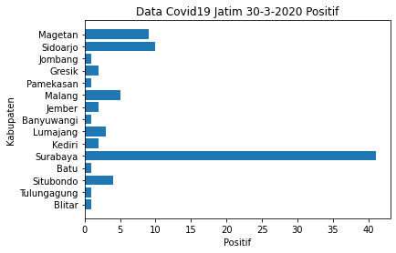
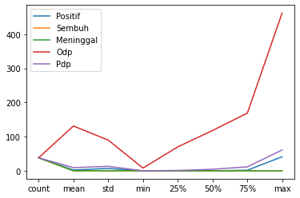
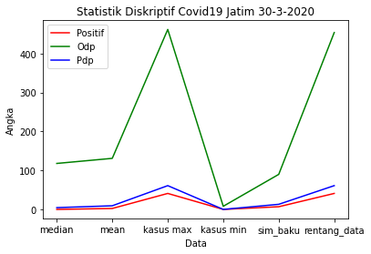

Tugas 1 | Statistik Deskriptif data
Contents
Tugas 1 | Statistik Deskriptif data#
Run this code#
Import libary python#
import pandas as pd
from matplotlib import rcParams, cycler
import matplotlib.pyplot as plt
import numpy as np
from scipy.stats import skew
import seaborn as sns
1. membuat data dari url#
Menampilkan data dalam bentuk table, Kasus Covid 19 Positif yang lebih dari sama dengan 1.
df = pd.read_csv("https://raw.githubusercontent.com/yanchespenda/covid19-indonesia-datasource-csv/master/provinsi/hari%20ini/Jawa%20Timur.csv")
kasus = df[df['Positif'] >=1]
kasus
| Kabupaten/Kota | Positif | Sembuh | Meninggal | Odp | Pdp | Terakhir Update | |
|---|---|---|---|---|---|---|---|
| 0 | Kabupaten Blitar | 1 | 0 | 0 | 282 | 2 | 30-03-2020 |
| 1 | Kabupaten Tulungagung | 1 | 0 | 0 | 462 | 26 | 30-03-2020 |
| 4 | Kabupaten Situbondo | 4 | 0 | 0 | 121 | 3 | 30-03-2020 |
| 5 | Kota Batu | 1 | 0 | 0 | 70 | 1 | 30-03-2020 |
| 6 | Kota Surabaya | 41 | 0 | 0 | 206 | 61 | 30-03-2020 |
| 7 | Kota Blitar | 1 | 0 | 0 | 102 | 1 | 30-03-2020 |
| 10 | Kota Kediri | 1 | 0 | 0 | 71 | 1 | 30-03-2020 |
| 11 | Kabupaten Lumajang | 3 | 0 | 0 | 104 | 8 | 30-03-2020 |
| 12 | Kabupaten Banyuwangi | 1 | 0 | 0 | 196 | 1 | 30-03-2020 |
| 13 | Kabupaten Jember | 2 | 0 | 0 | 207 | 10 | 30-03-2020 |
| 14 | Kota Malang | 4 | 0 | 0 | 165 | 16 | 30-03-2020 |
| 17 | Kabupaten Pamekasan | 1 | 0 | 0 | 115 | 1 | 30-03-2020 |
| 25 | Kabupaten Gresik | 2 | 0 | 0 | 153 | 25 | 30-03-2020 |
| 26 | Kabupaten Jombang | 1 | 0 | 0 | 146 | 3 | 30-03-2020 |
| 28 | Kabupaten Kediri | 2 | 0 | 0 | 107 | 5 | 30-03-2020 |
| 29 | Kabupaten Sidoarjo | 10 | 0 | 0 | 124 | 49 | 30-03-2020 |
| 33 | Kabupaten Malang | 5 | 0 | 0 | 69 | 18 | 30-03-2020 |
| 34 | Kabupaten Magetan | 9 | 0 | 0 | 43 | 9 | 30-03-2020 |
menampilkan data dalam bentuk chart#
x = kasus['Kabupaten/Kota']
kota = []
for i in x:
namakota = i.split()
kota.append(namakota[1])
y = kasus['Positif']
plt.xlabel('Positif')
plt.ylabel('Kabupaten')
plt.barh(kota,y)
plt.title('Data Covid19 Jatim 30-3-2020 Positif')
plt.show()

2. Membuat statistik diskriptif dari data (bertipe numerik)#
Rumus mean :
𝓶 = \(\frac {Σxˌ}{𝓷}\)
ket:
- 𝓶 = mean/ nilai rata - rata
- 𝒙ˌ = jumlah data
- 𝓷 = banyaknya data
Rumus Max :
Nilai Terakhir dari 𝐗[n] ;
ket:
- 𝐗 = Daftar nilai yang di urutkan dalam set data
- n = Jumlah nilai dalam set data
Rumus Min :
Nilai Pertama dari 𝐗[n] ;
ket:
- 𝐗 = Daftar nilai yang di urutkan dalam set data
- n = Jumlah nilai dalam set data
Rumus Simpangan Baku :
𝞼 = \(\sqrt{\frac{Σ(𝒙ˌ-𝜇)^2}{N}} \)
ket:
- 𝞼 = Simpangan baku populasi
- N = Jumlah Populasi
- 𝔁ᵢ = Setiap nilai dari populasi
- 𝞵 = rata - rata populasi
Rumus Median :
Med(𝑿) = 𝑿[\(\frac{n}{2}\)] ; Jika n Genap
Med(𝑿) = \(\frac{𝑿[\frac{n-1}{2}]+ 𝑿[\frac{n+1}{2}]}{2}\) ; Jika n Ganjil
ket:
𝑿 = Daftar nilai yang diurutkan dalam set data
n = Jumlah nilai dalam set data
Rumus Rentang Data / Range :
R = 𝐱 max - 𝐱 min
ket:
R = Rentang data
x = nilai dari suatu kumpulan data
Rumus Quartil:
\(Q_i = Tb +[\frac{\frac{1}{4}n-f_k}{f_i}]\)
ket:
Q = kuartil ke -i
n = banyak data
f = frekuensi kelas ke - i
b = tepi bawah
Dengan Menggunakan libary langsung#
dataDis = df.describe()
for i in dataDis:
plt.plot(dataDis[i],label=i)
plt.legend()

Dengan Pencarian Manual data diskriptif Positif#
x = ['median','mean', 'kasus max','kasus min','sim_baku', 'rentang_data']
mean_Positif = df.Positif.mean()
kasus_Positifmax = df.Positif.max()
kasus_Positifmin = df.Positif.min()
simpanganBaku_Positif = df.Positif.std()
rentangData_Positif = df.Positif.max() - df.Positif.min()
median_Positif = df.Positif.median()
data diskriptif Odp#
mean_odp = df.Odp.mean()
kasus_Odpmax = df.Odp.max()
kasus_Odpmin = df.Odp.min()
simpanganBaku_odp = df.Odp.std()
rentangData_odp = df.Odp.max() - df.Odp.min()
median_Odp = df.Odp.median()
data diskriptif Pdp#
mean_Pdp = df.Pdp.mean()
kasus_Pdpmax = df.Pdp.max()
kasus_Pdpmin = df.Pdp.min()
simpanganBaku_Pdp = df.Pdp.std()
rentangData_Pdp = df.Pdp.max() - df.Pdp.min()
median_Pdp = df.Pdp.median()
plt.plot(x,[median_Positif,mean_Positif,kasus_Positifmax,kasus_Positifmin,simpanganBaku_Positif,rentangData_Positif],color='r',label='Positif')
plt.plot(x,[median_Odp,mean_odp,kasus_Odpmax,kasus_Odpmin,simpanganBaku_odp,rentangData_odp],color= 'g' , label = 'Odp')
plt.plot(x,[median_Pdp,mean_Pdp,kasus_Pdpmax,kasus_Pdpmin,simpanganBaku_Pdp,rentangData_Pdp],color= 'b' , label = 'Pdp')
plt.xlabel("Data")
plt.ylabel("Angka")
plt.title("Statistik Diskriptif Covid19 Jatim 30-3-2020")
plt.legend()
plt.show()

3. Mendeskripsikan Skewned dari data setiap variable (bertipe numerik)#
Rumus SKEW / ukuran kemiringan :
Sk = \(\frac{3(𝜇 - Med)}{σ} \)
ket:
Sk = skew / ukuran kemiringan
𝜇 = nilai rata - rata hitung
Med = median
σ = simpangan baku / standar deviasi
data_num = df.select_dtypes(['int64','float64'])
for colom in data_num:
print(' ')
print(colom)
print(skew(data_num[colom]))
plt.figure()
sns.displot(data_num[colom],kde=True)
plt.title("Skew Data tipe Numerik")
plt.show()
Positif
4.959147108941667
<Figure size 432x288 with 0 Axes>
Sembuh
0.0
<Figure size 432x288 with 0 Axes>
Meninggal
0.0
<Figure size 432x288 with 0 Axes>
Odp
1.4310829984067657
<Figure size 432x288 with 0 Axes>
Pdp
2.479893820178332
<Figure size 432x288 with 0 Axes>